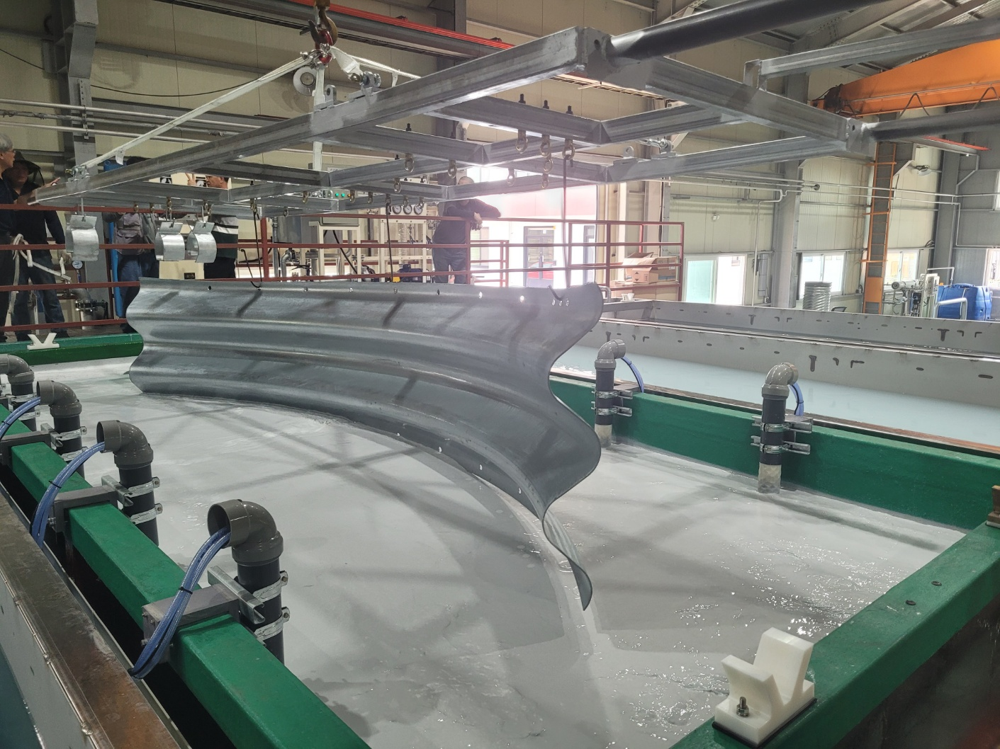

شهادة التقنية الجديدة المتميزة NET
وثائق اعتماد تقنية المعالجة السطحية الصديقة للبيئة والطلاء بالترسيب الكهربائي.

تقنية طلاء اختُبرت من حيث الالتصاق ومقاومة البري والعوامل الجوية.
يُهيّئ التخريش الإلكتروليتي السطح لالتصاق الطلاء، ثم تُستخدم المعالجة الأولية بالزركونيوم والطلاء بالترسيب الكهربائي لتحسين حماية سطح ألواح الفولاذ المموج المجلفن.
وثائق اعتماد تقنية المعالجة السطحية الصديقة للبيئة والطلاء بالترسيب الكهربائي.
اطّلع على شهادة تصنيف ألواح الفولاذ المموج ذات الطلاء الوظيفي ضمن المنتجات المبتكرة.
تجري حالياً مفاوضات الأسعار، ولم يكتمل بعد التسجيل لدى هيئة المشتريات العامة الكورية.
نتائج واردة في عرض NET لعام 2024 وعرض المنتج المبتكر لعام 2026. تُقرأ مع شروط الاختبار وعينات المقارنة.
تصنيف الالتصاق 0 باختبار القطع المتقاطع وتباعد 1 مم بعد التعرض للأحماض والقلويات والماء والرطوبة، لمدة 72 ساعة لكل حالة على حدة.
عرض 2026، صفحة 23 · KCLمتوسط الفقد الكتلي بالبري: 97 ملغ ← 58 ملغ. عجلة CS-17، حمل 1,000 غرام، 1,000 دورة.
عرض 2026، صفحة 24 · KCL · Koptriنتائج رش الملح المتعادل لـ14 حالة من المقاسات الأولية والقصوى الواردة في العرض.
عرض 2026، صفحة 26 · KTRلم يظهر تشقق أو انتفاخ أو انفصال أو تقشّر في اختبار التعتيق المعجّل بالأشعة فوق البنفسجية.
عرض التقييم الموقعي NET لعام 2024، صفحة 15 · KCL| الخاصية | شروط الاختبار | النتيجة المعلنة |
|---|---|---|
| الالتصاق بعد التعرض للحمض والقلوي | حمض الكبريتيك 10% أو هيدروكسيد الصوديوم 10%، عند 23±1°C، لمدة 72 ساعة لكل منهما · تباعد القطع المتقاطع 1 مم | التصنيف 0 |
| الالتصاق بعد التعرض للماء والرطوبة | الماء: ماء مقطّر عند 60±1°C لمدة 72 ساعة / الرطوبة: 60±1°C ورطوبة نسبية 95±5% لمدة 72 ساعة | التصنيف 0 |
| مقارنة مقاومة البري | CS-17 · حمل 1,000 غرام · 1,000 دورة | عينة المقارنة 97 ملغ ← متوسط المنتج المتقدم 58 ملغ |
| مقارنة مقاومة النفاذ | كلوريد الصوديوم 10% · هيدروكسيد الصوديوم 10% · حمض الكبريتيك 30%، لمدة 48 ساعة لكل حالة | لا عيوب في المنتج المتقدم / ظهور صدأ أحمر على منتج المقارنة في العرض |
| رش الملح المتعادل | 500 ساعة · عرض 2026 | لا عيوب مُبلّغ عنها |
| التعتيق المعجّل | أشعة UV لمدة 1,000 ساعة: KS M ISO 4892-3 وKS A 0063، وثائق NET لعام 2024 زينون لمدة 300 ساعة: عرض 2026 | لا عيوب مُبلّغ عنها في كل اختبار |
| اختبارات إضافية | مقاومة الصدم · الثقوب الدقيقة · رشح أربعة معادن ثقيلة، عرض 2026 | لا عيوب مُبلّغ عنها في العرض |
المصادر: عرض التقييم الموقعي NET لعام 2024، صفحة 15؛ عرض المنتج المبتكر بتاريخ 2026.04.14، الصفحات 23–26. النتائج خاصة بالعينات والشروط المحددة ولا تُحوّل إلى عمر خدمة. انخفاض الفقد بالبري نحو 40.2%، محسوب من المتوسطين 97 و58 ملغ. شهادة NET وتصنيف المنتج المبتكر منفصلان عن التسجيل في المشتريات الحكومية. مفاوضات الأسعار جارية والتسجيل لم يكتمل.
تعرّف على العملية وتشكيلة المنتجات وبيانات الاختبار من خلال معدات الطلاء وكتالوج المنتج.
يُشكّل التخريش الإلكتروليتي في محلول بيكربونات الصوديوم خشونة سطحية مجهرية، تليها معالجة أولية بالزركونيوم وطلاء أكريليكي مائي بالترسيب الكهربائي. تهدف العملية إلى تحسين الالتصاق ومقاومة البيئات المسببة للتآكل والبري.
صور فعلية للعملية والمنتجات المطلية من الصفحتين 8–9 لعرض التقييم الموقعي NET لعام 2024.




اختر المستند لعرض النسخة الأصلية.
ملخص تقني مستند إلى عرضَي التقييم الأولي والموقعي لـREXSTEEL ضمن NET لعام 2024.
يعرض الملف تطوير المعالجة السطحية وتحسين التصاق الطلاء على الأجزاء الكبيرة المجلفنة بالغمس الساخن كأهداف للتقنية.
يُنشئ التخريش الإلكتروليتي باستخدام محلول بيكربونات الصوديوم نسيجاً سطحياً مجهرياً يساعد على التصاق الطلاء.
معالجة أولية بالزركونيوم يتبعها طلاء وظيفي بالترسيب الكهربائي، كتقنية مطوّرة لألواح الفولاذ المموج الكبيرة.
صور فعلية من وثائق الاختبار، توضح تقييم الالتصاق والحالة قبل اختبار البري وبعده.


تخضع ألواح الفولاذ المموج ذات الطلاء الوظيفي لمفاوضات أسعار التوريد الحكومي، ولم يكتمل بعد تسجيلها لدى هيئة المشتريات العامة الكورية.
بعد اكتمال التسجيل، سنعرض الموديلات والمواصفات ومعرّفات الأصناف النهائية وإرشادات الشراء.
تواصل معنا بشأن المنتجات والتصميم ودعم التنفيذ.